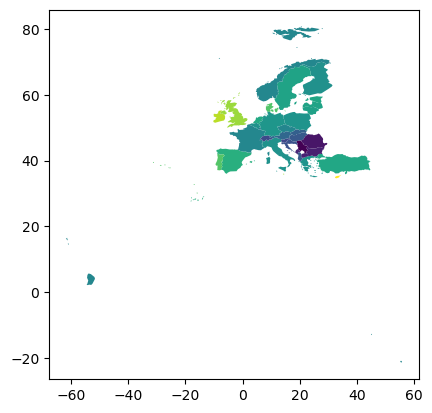
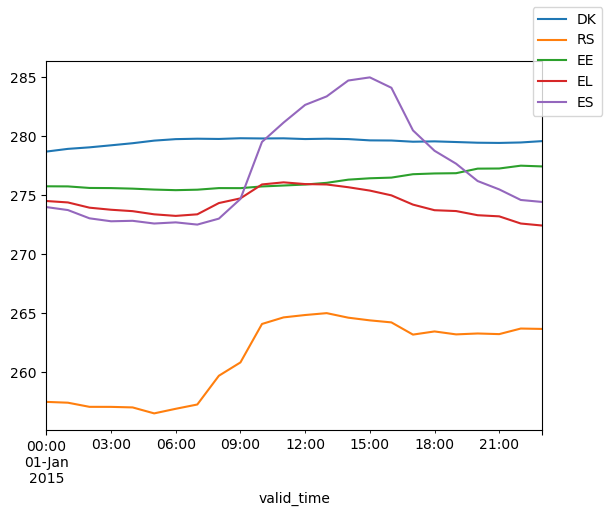

Reducing data-cubes using geometry objects
[1]:
# If first time running, uncomment the line below to install any additional dependencies
# !bash requirements-for-notebooks.sh
[2]:
import matplotlib.pyplot as plt
import numpy as np
from earthkit import transforms as ekt
from earthkit import data as ekd
from earthkit.data.testing import earthkit_remote_test_data_file
Load some test data
All earthkit-transforms methods can be called with earthkit-data objects (Readers and Wrappers) or with the pre-loaded xarray or geopandas objects.
In this example we will use hourly ERA5 2m temperature data on a 0.5x0.5 spatial grid for the year 2015 as our physical data; and we will use the NUTS geometries which are stored in a geojson file.
First we lazily load the ERA5 data and NUTS geometries from our test-data repository.
Note the data is only downloaded when we use it, e.g. at the .to_xarray line, additionally, the download is cached so the next time you run this cell you will not need to re-download the file (unless it has been a very long time since you have run the code, please see tutorials in earthkit-data for more details in cache management).
[3]:
# Get some demonstration ERA5 data, this could be any url or path to an ERA5 grib or netCDF file.
# remote_era5_file = earthkit_remote_test_data_file("test-data", "era5_temperature_europe_2015.grib") # Large file
remote_era5_file = earthkit_remote_test_data_file("test-data", "era5_temperature_europe_20150101.grib")
era5_data = ekd.from_source("url", remote_era5_file)
era5_xr = era5_data.to_xarray(time_dim_mode="valid_time").rename({"2t": "t2m"})
era5_xr
[3]:
<xarray.Dataset> Size: 11MB
Dimensions: (valid_time: 24, latitude: 201, longitude: 281)
Coordinates:
* valid_time (valid_time) datetime64[ns] 192B 2015-01-01 ... 2015-01-01T23...
* latitude (latitude) float64 2kB 80.0 79.75 79.5 79.25 ... 30.5 30.25 30.0
* longitude (longitude) float64 2kB -10.0 -9.75 -9.5 ... 59.5 59.75 60.0
Data variables:
t2m (valid_time, latitude, longitude) float64 11MB ...
Attributes: (12/13)
param: 2t
paramId: 167
class: ea
stream: oper
levtype: sfc
type: an
... ...
date: 20150101
time: 0
domain: g
number: 0
Conventions: CF-1.8
institution: ECMWF[4]:
# Use some demonstration polygons stored, this could be any url or path to geojson file
remote_nuts_url = earthkit_remote_test_data_file("test-data", "NUTS_RG_60M_2021_4326_LEVL_0.geojson")
nuts_data = ekd.from_source("url", remote_nuts_url)
nuts_data.to_pandas()[:5]
[4]:
| id | NUTS_ID | LEVL_CODE | CNTR_CODE | NAME_LATN | NUTS_NAME | MOUNT_TYPE | URBN_TYPE | COAST_TYPE | FID | geometry | |
|---|---|---|---|---|---|---|---|---|---|---|---|
| 0 | DK | DK | 0 | DK | Danmark | Danmark | 0 | 0 | 0 | DK | MULTIPOLYGON (((15.1629 55.0937, 15.094 54.996... |
| 1 | RS | RS | 0 | RS | Serbia | Srbija/Сpбија | 0 | 0 | 0 | RS | POLYGON ((21.4792 45.193, 21.3585 44.8216, 22.... |
| 2 | EE | EE | 0 | EE | Eesti | Eesti | 0 | 0 | 0 | EE | MULTIPOLYGON (((27.357 58.7871, 27.6449 57.981... |
| 3 | EL | EL | 0 | EL | Elláda | Ελλάδα | 0 | 0 | 0 | EL | MULTIPOLYGON (((28.0777 36.1182, 27.8606 35.92... |
| 4 | ES | ES | 0 | ES | España | España | 0 | 0 | 0 | ES | MULTIPOLYGON (((4.391 39.8617, 4.1907 39.7981,... |
Reduce data
Default behaviour
The default behaviour is to reduce the data along the spatial dimensions, only, and return the reduced data in the Xarray format it was provided, i.e. xr.DataArray or xr.Dataset.
The returned object has a new dimension FID (feature id) which has a coordinate variable with the values of the FID column in the input geodataframe.
The new variable name is made up of the original variable name and the method used to reduce, e.g. t2m_mean
[5]:
reduced_data = ekt.spatial.reduce(era5_xr, nuts_data)
reduced_data
[5]:
<xarray.Dataset> Size: 8kB
Dimensions: (valid_time: 24, index: 37)
Coordinates:
* valid_time (valid_time) datetime64[ns] 192B 2015-01-01 ... 2015-01-01T23...
* index (index) int64 296B 0 1 2 3 4 5 6 7 8 ... 29 30 31 32 33 34 35 36
Data variables:
t2m (index, valid_time) float64 7kB 278.7 278.9 ... 272.7 272.6
Attributes: (12/13)
param: 2t
paramId: 167
class: ea
stream: oper
levtype: sfc
type: an
... ...
date: 20150101
time: 0
domain: g
number: 0
Conventions: CF-1.8
institution: ECMWFReduce along additional dimension
For example, any time dimension, this is advisable as it ensures correct handling missing values and weights.
The extra_reduce_dims argument takes a single string or a list of strings corresponding to dimensions to include in the reduction.
It is also possible to select a column in the geodataframe to use to populate the dimension and coordinate variable created by the reduction using the mask_dim kwarg, here we choose the "FID" column.
[6]:
reduced_data = ekt.spatial.reduce(
era5_xr, nuts_data,
mask_dim="FID", extra_reduce_dims='valid_time', all_touched=True
)
reduced_data
[6]:
<xarray.Dataset> Size: 592B
Dimensions: (FID: 37)
Coordinates:
* FID (FID) object 296B 'DK' 'RS' 'EE' 'EL' 'ES' ... 'CY' 'CZ' 'DE' 'NO'
Data variables:
t2m (FID) float64 296B 279.5 261.7 276.3 275.9 ... 272.7 274.4 273.1
Attributes: (12/13)
param: 2t
paramId: 167
class: ea
stream: oper
levtype: sfc
type: an
... ...
date: 20150101
time: 0
domain: g
number: 0
Conventions: CF-1.8
institution: ECMWFWeighted reduction
Provide numpy/xarray arrays of weights, or use predefined weights options, i.e. latitude:
[7]:
reduced_data_xr = ekt.spatial.reduce(
era5_xr, nuts_data, weights='latitude', mask_dim="FID", extra_reduce_dims='valid_time',
all_touched=True
)
reduced_data_xr
[7]:
<xarray.Dataset> Size: 592B
Dimensions: (FID: 37)
Coordinates:
* FID (FID) object 296B 'DK' 'RS' 'EE' 'EL' 'ES' ... 'CY' 'CZ' 'DE' 'NO'
Data variables:
t2m (FID) float64 296B 279.5 261.6 276.3 276.0 ... 272.7 274.3 274.3
Attributes: (12/13)
param: 2t
paramId: 167
class: ea
stream: oper
levtype: sfc
type: an
... ...
date: 20150101
time: 0
domain: g
number: 0
Conventions: CF-1.8
institution: ECMWFReturn as a pandas dataframe
WARNING: Returning reduced data in pandas format is considered experimental and may change in futureversions of earthkit
It is possible to return the reduced data in a fully expanded geopandas dataframe which contains the geometry and aggregated data. Additional columns for the data values and rows and indexes added to fully describe the reduced data.
The returned object fully supports pandas indexing and in-built convenience methods (e.g. plotting), but it comes with memory usage cost, hence in this example we reduce along all dimensions.
[8]:
reduced_data_pd = ekt.spatial.reduce(era5_xr, nuts_data, return_as="pandas", mask_dim="FID", extra_reduce_dims="valid_time")
reduced_data_pd[:10]
Returning reduced data in pandas format is considered experimental and may change in futureversions of earthkit
[8]:
| id | NUTS_ID | LEVL_CODE | CNTR_CODE | NAME_LATN | NUTS_NAME | MOUNT_TYPE | URBN_TYPE | COAST_TYPE | FID | geometry | t2m | |
|---|---|---|---|---|---|---|---|---|---|---|---|---|
| FID | ||||||||||||
| DK | DK | DK | 0 | DK | Danmark | Danmark | 0 | 0 | 0 | DK | MULTIPOLYGON (((15.1629 55.0937, 15.094 54.996... | 279.547336 |
| RS | RS | RS | 0 | RS | Serbia | Srbija/Сpбија | 0 | 0 | 0 | RS | POLYGON ((21.4792 45.193, 21.3585 44.8216, 22.... | 261.353859 |
| EE | EE | EE | 0 | EE | Eesti | Eesti | 0 | 0 | 0 | EE | MULTIPOLYGON (((27.357 58.7871, 27.6449 57.981... | 276.197991 |
| EL | EL | EL | 0 | EL | Elláda | Ελλάδα | 0 | 0 | 0 | EL | MULTIPOLYGON (((28.0777 36.1182, 27.8606 35.92... | 274.270998 |
| ES | ES | ES | 0 | ES | España | España | 0 | 0 | 0 | ES | MULTIPOLYGON (((4.391 39.8617, 4.1907 39.7981,... | 277.095383 |
| FI | FI | FI | 0 | FI | Suomi/Finland | Suomi/Finland | 0 | 0 | 0 | FI | MULTIPOLYGON (((28.8967 69.0426, 28.4782 68.51... | 273.923907 |
| FR | FR | FR | 0 | FR | France | France | 0 | 0 | 0 | FR | MULTIPOLYGON (((55.8498 -21.1858, 55.7858 -21.... | 272.965488 |
| HR | HR | HR | 0 | HR | Hrvatska | Hrvatska | 0 | 0 | 0 | HR | MULTIPOLYGON (((17.6515 45.8478, 17.9121 45.79... | 267.700746 |
| HU | HU | HU | 0 | HU | Magyarország | Magyarország | 0 | 0 | 0 | HU | POLYGON ((22.1211 48.3783, 22.1553 48.4034, 22... | 268.251129 |
| IE | IE | IE | 0 | IE | Éire/Ireland | Éire/Ireland | 0 | 0 | 0 | IE | POLYGON ((-7.1885 54.3377, -6.8642 54.3302, -6... | 283.832977 |
[9]:
reduced_data_pd.plot("t2m")
print('# Note that the NUTS regions include French foreign territories, hence the extent of the figure.')
# Note that the NUTS regions include French foreign territories, hence the extent of the figure.

Appendix
Unadvised: return_as = ‘pandas’ for time-series
This results in very heavy memory usage but may be useful
[10]:
reduced_data_pd = ekt.spatial.reduce(era5_xr, nuts_data, return_as="pandas", mask_dim="FID")
reduced_data_pd[:5]
Returning reduced data in pandas format is considered experimental and may change in futureversions of earthkit
[10]:
| id | NUTS_ID | LEVL_CODE | CNTR_CODE | NAME_LATN | NUTS_NAME | MOUNT_TYPE | URBN_TYPE | COAST_TYPE | FID | geometry | t2m | ||
|---|---|---|---|---|---|---|---|---|---|---|---|---|---|
| FID | valid_time | ||||||||||||
| DK | 2015-01-01 00:00:00 | DK | DK | 0 | DK | Danmark | Danmark | 0 | 0 | 0 | DK | MULTIPOLYGON (((15.1629 55.0937, 15.094 54.996... | 278.709224 |
| 2015-01-01 01:00:00 | DK | DK | 0 | DK | Danmark | Danmark | 0 | 0 | 0 | DK | MULTIPOLYGON (((15.1629 55.0937, 15.094 54.996... | 278.938862 | |
| 2015-01-01 02:00:00 | DK | DK | 0 | DK | Danmark | Danmark | 0 | 0 | 0 | DK | MULTIPOLYGON (((15.1629 55.0937, 15.094 54.996... | 279.068517 | |
| 2015-01-01 03:00:00 | DK | DK | 0 | DK | Danmark | Danmark | 0 | 0 | 0 | DK | MULTIPOLYGON (((15.1629 55.0937, 15.094 54.996... | 279.241260 | |
| 2015-01-01 04:00:00 | DK | DK | 0 | DK | Danmark | Danmark | 0 | 0 | 0 | DK | MULTIPOLYGON (((15.1629 55.0937, 15.094 54.996... | 279.418631 |
[11]:
feature_index = "FID"
plot_var = "t2m"
# plot_x_vals = reduced_data.attrs[f"{plot_var}_dims"]["time"]
fig, ax = plt.subplots(1)
for feature in reduced_data_pd.index.get_level_values(feature_index).unique()[:5]:
temp = reduced_data_pd.xs(feature, level=feature_index)
temp[plot_var].plot(ax=ax, label=feature)
fig.legend()
[11]:
<matplotlib.legend.Legend at 0x7f90e87b6a10>

Providing a bespoke function for the reduction
When providing a our own function to the reduce method it must conform the the Xarray requirements defined in their documentation pages. Specifically:
“Function which can be called in the form f(x, axis=axis, **kwargs) to return the result of reducing an np.ndarray over an integer valued axis.”
Here we will calculate the ratio of the standard deviation to the mean for demonstration purposes only. We use nanmean and nanstd so that we ignore the nan values.
[12]:
def std_mean_ratio(x, axis=0, **kwargs):
return np.nanstd(x, axis=axis, **kwargs) / np.nanmean(x, axis=axis, **kwargs)
[13]:
reduced_data = ekt.spatial.reduce(
era5_xr, nuts_data,
how = std_mean_ratio
)
reduced_data
/home/runner/micromamba/envs/DEVELOP/lib/python3.11/site-packages/numpy/lib/_nanfunctions_impl.py:2015: RuntimeWarning: Degrees of freedom <= 0 for slice.
var = nanvar(a, axis=axis, dtype=dtype, out=out, ddof=ddof,
/home/runner/micromamba/envs/DEVELOP/lib/python3.11/site-packages/numpy/lib/_nanfunctions_impl.py:2015: RuntimeWarning: Degrees of freedom <= 0 for slice.
var = nanvar(a, axis=axis, dtype=dtype, out=out, ddof=ddof,
[13]:
<xarray.Dataset> Size: 8kB
Dimensions: (valid_time: 24, index: 37)
Coordinates:
* valid_time (valid_time) datetime64[ns] 192B 2015-01-01 ... 2015-01-01T23...
* index (index) int64 296B 0 1 2 3 4 5 6 7 8 ... 29 30 31 32 33 34 35 36
Data variables:
t2m (index, valid_time) float64 7kB 0.002451 0.002455 ... 0.01744
Attributes: (12/13)
param: 2t
paramId: 167
class: ea
stream: oper
levtype: sfc
type: an
... ...
date: 20150101
time: 0
domain: g
number: 0
Conventions: CF-1.8
institution: ECMWF[ ]: